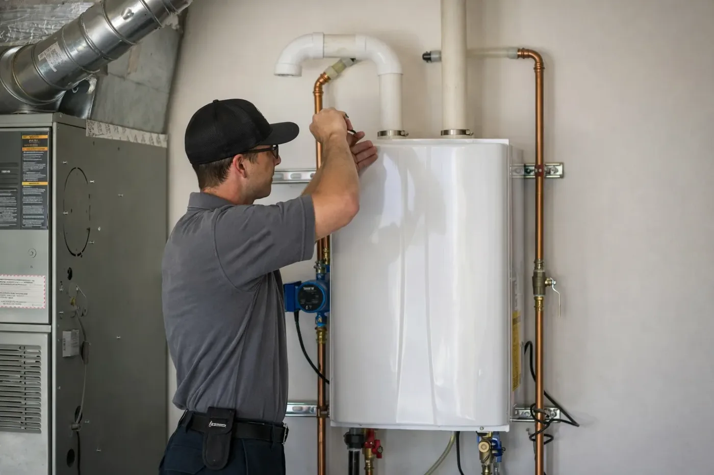

Cuéntenos qué sucede
Comparta su ubicación, el problema y algunas fotos por WhatsApp.

SU PROPIEDAD. NUESTRA PRIORIDAD.
Diagnóstico de calentadores de agua, planificación de reemplazos y conexiones de plomería para su propiedad.

CONOZCA EL SERVICIO
Cuéntenos sobre temperaturas inestables, fugas visibles o un equipo que ya no cubre sus necesidades. Comparta el modelo, tipo de energía y fotos de las conexiones para conversar sobre el alcance y los requisitos del lugar.
ANTES DE EMPEZAR
Su ciudad, una descripción del problema y fotos claras. Para calentadores, incluya la etiqueta del modelo y las conexiones visibles.
El alcance depende del estado, acceso, materiales y trabajo necesario. Revisamos la información proporcionada y confirmamos si hace falta una visita.
Sí. Comuníquese con NextPro en inglés o español por teléfono o WhatsApp.
SENCILLO DESDE EL INICIO
Comparta su ubicación, el problema y algunas fotos por WhatsApp.
Conversamos sobre el problema visible, el alcance y la cotización antes de programar.
Acordamos el acceso y la fecha, con comunicación en su idioma preferido.